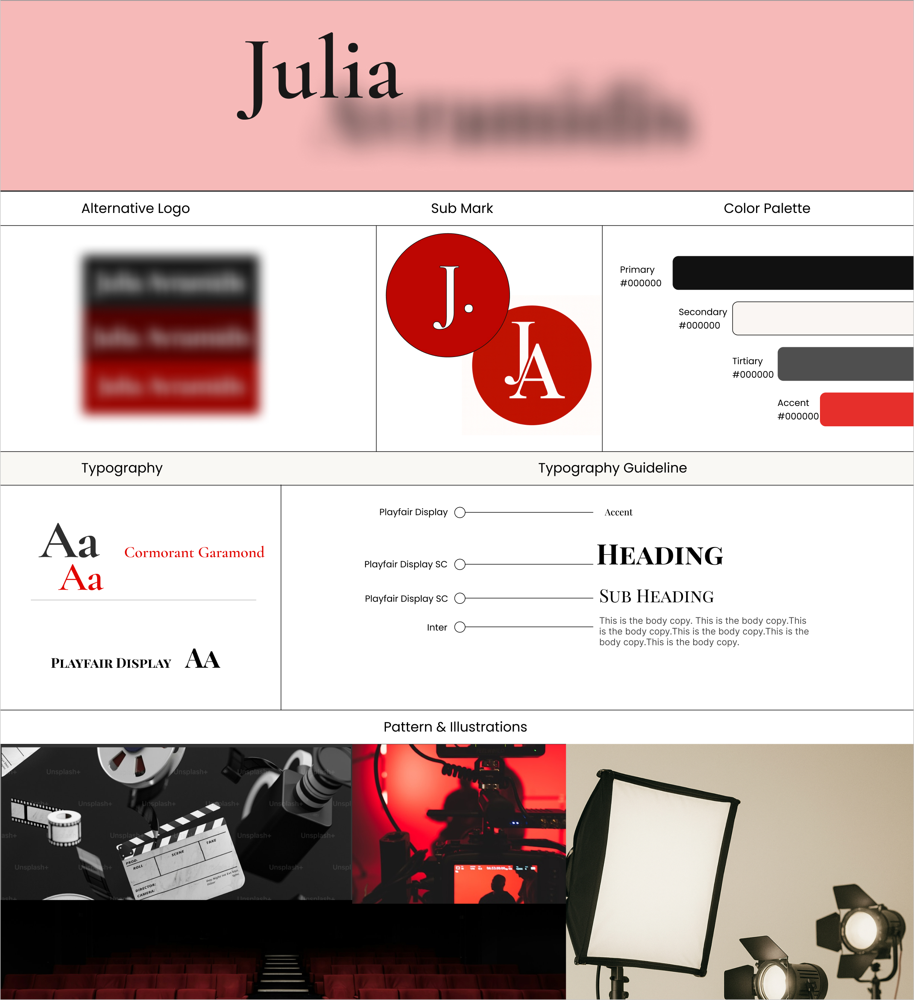
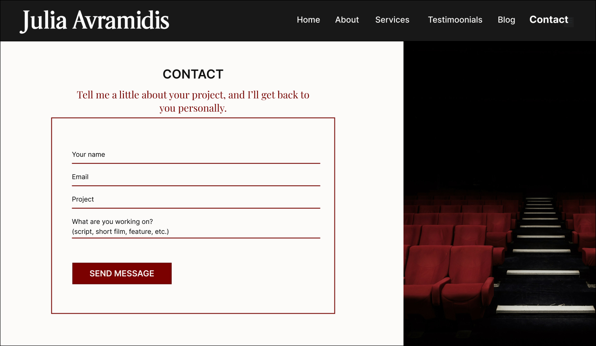
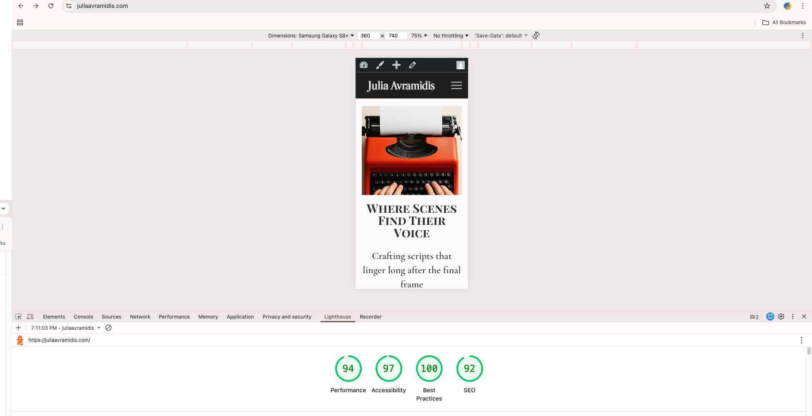

Project Overview
Julia Avramidis is a cinematic screenwriter and script consultant building a professional digital presence within the Canadian and international creative community.
The goal was to design and launch a content-driven digital product that clearly communicates her services, builds trust, and supports editorial growth — without overwhelming users.
- Screenwriter — creative voice, cinematic tone
- Script Consultant — structure, clarity, professional guidance
Problem Statement
Julia needed a professional platform that could convert visitors into meaningful conversations while preserving a calm, personal tone.
The key challenge was balancing emotional storytelling with usability, while designing a system manageable by a non-technical client.
Users & Goals
Primary Users
- Independent filmmakers
- Producers and directors
- Writers seeking script feedback
- Film students and emerging creators
User Needs
- Clear understanding of services
- Trust and credibility
- A sense of Julia’s creative voice
- Low-pressure, simple contact
User Journey
The user journey was intentionally designed to remain simple and focused, reducing cognitive load while guiding users toward meaningful contact.
- Discover Julia’s role and positioning
- Understand available services
- Build trust through tone, structure, and testimonials
- Explore editorial content for deeper context (optional)
- Initiate contact via a low-friction email form
This streamlined flow informed all UX, layout, and content decisions, ensuring clarity without overwhelming first-time visitors.
Information Architecture

- Home
- About
- Services (two packages)
- Insights (blog)
- Contact
Wireframes & UX Decisions

Early wireframes reduced visual rework and ensured alignment before high-fidelity design and development.
Visual Direction & Design System


Service Presentation

Contact Form UX

- Minimal required fields
- Human, non-pressuring language
- Mobile-first usability
CMS & Backend Design

The CMS allows the client to manage content independently while preserving design consistency.
SEO & Performance

Outcome
- Fully launched, production-ready product
- Clear service positioning
- Low-friction user journey
- Scalable CMS
Why This Matters (Product Design)
This project reflects full product design ownership—from early discovery and UX strategy to system-level thinking, interface design, and real-world delivery. It demonstrates the ability to translate user needs and business constraints into a scalable, maintainable digital product.